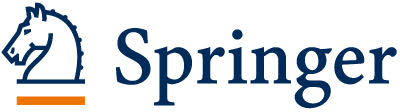
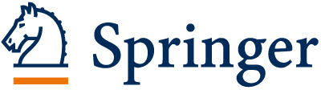

ACPR is a premier-level international conference that brings together researchers working in pattern recognition and related fields. Submissions are not restricted to those from Asia-Pacific, and are highly encouraged.
Topics of interest include all aspects of pattern recognition, including, but not limited to:
- Computer Vision and Robot Vision
- Pattern Recognition and Machine Learning
- Signal Processing (signal, speech, image)
- Media Processing and Interaction (videos, documents, medical, biometrics, HCI, VR, etc.)
The conference will be held at the Aotea Centre in Auckland. ACPR 2019 is brought to you by the Auckland University of Technology (AUT), in collaboration with the University of Otago and the Indian Statistical Institute.
Keynote Speakers
Our Keynote Speakers are:- Professor Yihong Wu (Chinese Academy of Sciences, China)
Is it Possible to Localize a Camera without Matching?
- Professor Andrea Cavallaro (Queen Mary University of London, UK)
Multimodal Learning for Robust and Privacy Preserving Analytics
- Professor Dacheng Tao (University of Sydney, Australia)
AI at Dawn - Opportunities and Challenges
Important Dates
See individual workshops for workshop deadlines; main conference as follows:Abstract Submission: 24 July 2019 (submission of title and abstract in EasyChair)
Paper Submission: 1 August 2019 (no extensions)
Supplementary Materials: 8 August 2019
Notification to Authors: 1 September 2019
Camera Ready Papers Due: 1 October 2019
Demonstration Submission: 1 November 2019
Conference Dates: 26-29 November 2019
Awards at ACPR 2019
The Program Chairs of ACPR 2019 will select the recipients of three awards (each with a NZD$400 prize):- IAPR Best Paper Award
- IAPR Best Application Paper Award
- IAPR Best Paper Presentation Award
The General Chairs of ACPR 2019 will select the following award (with a NZ$300 prize):
- N3T Best Paper on "Road and Vehicle Safety" (main conference and workshop papers are eligible)
Two SkyJumps will also be auctioned at the conference. If you miss out, reduced prices for SkyJumps for ACPR participants are on offer.
Publication of Proceedings
All accepted papers personally presented by one of the authors will be published in Springer's Lecture Notes in Computer Science (LNCS) for the main conference, and Springer's Communications in Computer and Information Science (CCIS) for the workshops. LNCS and CCIS are indexed in the ISI Conference Proceedings Citation Index, Scopus, EI Engineering Index, Google Scholar, DBLP, etc. ACPR 2019 is endorsed by the International Association for Pattern Recognition (IAPR). 
 Local Auckland Partners
Conference preparation is kindly supported by Auckland Tourism, Events and Economic Development Ltd. We also appreciate special accommodation offers by AUT’s Wellesley Apartments.Sponsors
Gold
Centre for Robotics and Vision (CeRV)
Silver
Auckland University of Technology
Bronze

International Society for Artificial Intelligence and Robotics

Auckland Tourism, Events, and Economic Development (ATEED)

SkyCity


AJ Hackett Bungy NZ
Best Paper Award Sponsor

N3T - New Zealand's Transport Technology Testbed
For sponsorship queries, please contact acpr2019@aut.ac.nz.